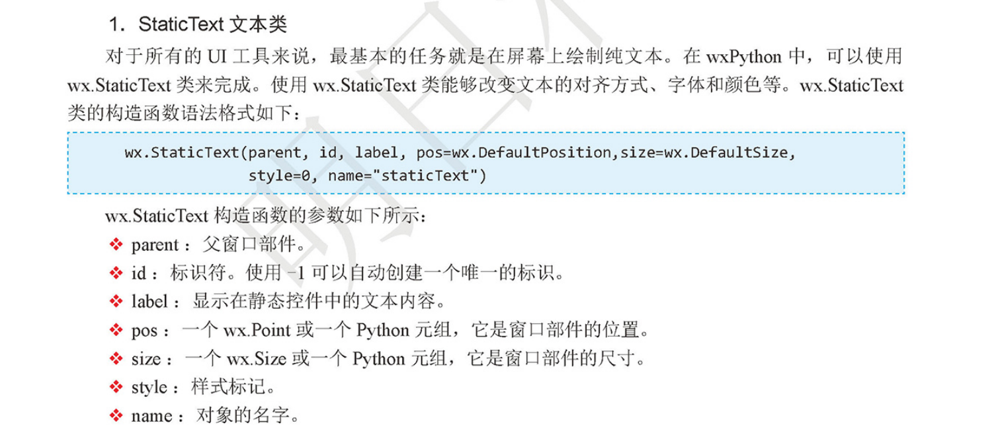

Contents
23.1.2. wxPython框架的使用¶
1 安装wxPython¶
wxPython 是个成熟而且特性丰富的跨平台GUI工具包。 由Robin Dunn 和Ham Pasanen 开发
官方网站： http://wxpython.org/
wxPython 的安装非常简单，
使用pip 工具安装只需要一行命令：
#国外pip源，经常会出现超时的现象，-U更新模块
pip install -U wxPython
# 使用国内豆瓣pip源
pip install -i https://pypi.doubanio.com/simple/ --trusted-host pypi.doutsnio.com wxpython
创建一个wx.App子类¶
#!/usr/bin/env python
#-*- coding:utf8 -*-
# auther; 18793
# Date：2019/4/16 13:22
# filename: 01.创建一个wx.app子类.py
import wx
class App(wx.App):
''' 创建wx.App的子类App'''
def OnInit(self):
'''初始化方法'''
frame = wx.Frame(parent=None,title="Hello wypython") #创建窗口
frame.Show() #显示窗口
return True
if __name__ == '__main__':
app = App() #实例化App类
app.MainLoop() #调用App类中的MainLoop()主循环方法
直接使用wx.App类¶
#!/usr/bin/env python
#-*- coding:utf8 -*-
# auther; 18793
# Date：2019/4/16 13:28
# filename: 02.直接使用wx.App的方式.py
import wx
app = wx.App() #实例化wx类
frame = wx.Frame(None,title="Hello wxPython") #初始化wx.App类
frame.Show() #显示窗口
app.MainLoop() #调用wx.App类的MailLoop()主循环方法
使用wx.Frame框架¶

#!/usr/bin/env python
# -*- coding:utf8 -*-
# auther; 18793
# Date：2019/4/16 13:32
# -*- coding:utf-8 -*-
import wx # 导入wxPython
class MyFrame(wx.Frame):
def __init__(self, parent, id):
wx.Frame.__init__(self,parent,id, title="创建Frame",pos=(100, 100), size=(300, 300))
if __name__ == '__main__':
app = wx.App() # 初始化应用
frame = MyFrame(parent=None, id=-1) # 实例MyFrame类，并传递参数
frame.Show() # 显示窗口
app.MainLoop() # 调用MainLoop()主循环方法
常用控件¶
wx.StaticText类¶
#!/usr/bin/env python
# -*- coding:utf8 -*-
# auther; 18793
# Date：2019/4/16 13:56
# filename: 文字框输出.py
import wx # 导入wxPython
class MyFrame(wx.Frame):
def __init__(self, parent, id):
wx.Frame.__init__(self, parent, id, title="创建StaticText 文本", pos=(100, 100), size=(600, 400))
#创建画板
panel = wx.Panel(self)
# 创建标题，并设置字体
title = wx.StaticText(panel, label="Python之阐---by Tim Peters", pos=(100, 20))
font = wx.Font(16, wx.DEFAULT, wx.FONTSTYLE_NORMAL,wx.NORMAL)
title.SetFont(font)
#创建文本
wx.StaticText(panel, label="Beautiful is better than ugly.", pos=(50, 50))
wx.StaticText(panel, label="Explicit is better than implicit.", pos=(50, 70))
wx.StaticText(panel, label="Simple is better than complex.", pos=(50, 90))
if __name__ == '__main__':
app = wx.App() # 初始化应用
frame = MyFrame(parent=None, id=-1) # 实例MyFrame类，并传递参数
frame.Show() # 显示窗口
app.MainLoop() # 调用MainLoop()主循环方法

使用wx.TextCtrl实现登录界面¶
#!/usr/bin/env python
# -*- coding:utf8 -*-
# auther; 18793
# Date：2019/4/16 14:30
# filename: 使用wx.TextCtrl实现登录界面.py
import wx # 导入wxPython
class MyFrame(wx.Frame):
def __init__(self, parent, id):
wx.Frame.__init__(self, parent, id, title="创建TextCtrl", pos=(100, 100), size=(400, 300))
# 创建面板
panel = wx.Panel(self)
# 创建文本和输入框
self.title = wx.StaticText(panel, label="请输入用户名和密码 ", pos=(140, 20))
self.label_user = wx.StaticText(panel, label="用户名: ", pos=(50, 50))
self.text_user = wx.TextCtrl(panel, pos=(100, 50), size=(235, 25), style=wx.TE_LEFT)
self.label_pwd = wx.StaticText(panel, pos=(50, 90), label="密码: ")
self.text_password = wx.TextCtrl(panel, pos=(100, 90), size=(235, 25), style=wx.TE_PASSWORD)
if __name__ == '__main__':
app = wx.App() # 初始化应用
frame = MyFrame(parent=None, id=-1) # 实例MyFrame类，并传递参数
frame.Show() # 显示窗口
app.MainLoop() # 调用MainLoop()主循环方法
BoxSizer布局 + 事件绑定¶
实现一个简单的登录界面框
# -*- coding:utf-8 -*-
import wx
class MyFrame(wx.Frame):
def __init__(self, parent, id):
wx.Frame.__init__(self, parent, id, '用户登录', size=(400, 300))
# 创建面板
panel = wx.Panel(self)
# 创建“确定”和“取消”按钮,并绑定事件
self.bt_confirm = wx.Button(panel, label='确定')
self.bt_confirm.Bind(wx.EVT_BUTTON, self.OnclickSubmit)
self.bt_cancel = wx.Button(panel, label='取消')
self.bt_cancel.Bind(wx.EVT_BUTTON, self.OnclickCancel)
# 创建文本，左对齐
self.title = wx.StaticText(panel, label="请输入用户名和密码")
self.label_user = wx.StaticText(panel, label="用户名:")
self.text_user = wx.TextCtrl(panel, style=wx.TE_LEFT)
self.label_pwd = wx.StaticText(panel, label="密 码:")
self.text_password = wx.TextCtrl(panel, style=wx.TE_PASSWORD)
# 添加容器，容器中控件横向排列
hsizer_user = wx.BoxSizer(wx.HORIZONTAL)
hsizer_user.Add(self.label_user, proportion=0, flag=wx.ALL, border=5)
hsizer_user.Add(self.text_user, proportion=1, flag=wx.ALL, border=5)
hsizer_pwd = wx.BoxSizer(wx.HORIZONTAL)
hsizer_pwd.Add(self.label_pwd, proportion=0, flag=wx.ALL, border=5)
hsizer_pwd.Add(self.text_password, proportion=1, flag=wx.ALL, border=5)
hsizer_button = wx.BoxSizer(wx.HORIZONTAL)
hsizer_button.Add(self.bt_confirm, proportion=0, flag=wx.ALIGN_CENTER, border=5)
hsizer_button.Add(self.bt_cancel, proportion=0, flag=wx.ALIGN_CENTER, border=5)
# 添加容器，容器中控件纵向排列
vsizer_all = wx.BoxSizer(wx.VERTICAL)
vsizer_all.Add(self.title, proportion=0, flag=wx.BOTTOM | wx.TOP | wx.ALIGN_CENTER,
border=15)
vsizer_all.Add(hsizer_user, proportion=0, flag=wx.EXPAND | wx.LEFT | wx.RIGHT, border=45)
vsizer_all.Add(hsizer_pwd, proportion=0, flag=wx.EXPAND | wx.LEFT | wx.RIGHT, border=45)
vsizer_all.Add(hsizer_button, proportion=0, flag=wx.ALIGN_CENTER | wx.TOP, border=15)
panel.SetSizer(vsizer_all)
def OnclickSubmit(self,event):
""" 单击确定按钮，执行方法 """
message = ""
username = self.text_user.GetValue() # 获取输入的用户名
password = self.text_password.GetValue() # 获取输入的密码
if username == "" or password == "" : # 判断用户名或密码是否为空
message = '用户名或密码不能为空'
elif username =='mr' and password =='mrsoft': # 用户名和密码正确
message = '登录成功'
else:
message = '用户名和密码不匹配' # 用户名或密码错误
wx.MessageBox(message) # 弹出提示框
def OnclickCancel(self,event):
""" 单击取消按钮，执行方法 """
self.text_user.SetValue("") # 清空输入的用户名
self.text_password.SetValue("") # 清空输入的密码
if __name__ == '__main__':
app = wx.App() # 初始化
frame = MyFrame(parent=None,id=-1) # 实例化MyFrame类，并传递参数
frame.Show() # 显示窗口
app.MainLoop() # 调用主循环方法